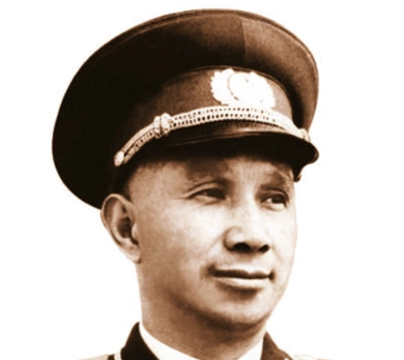
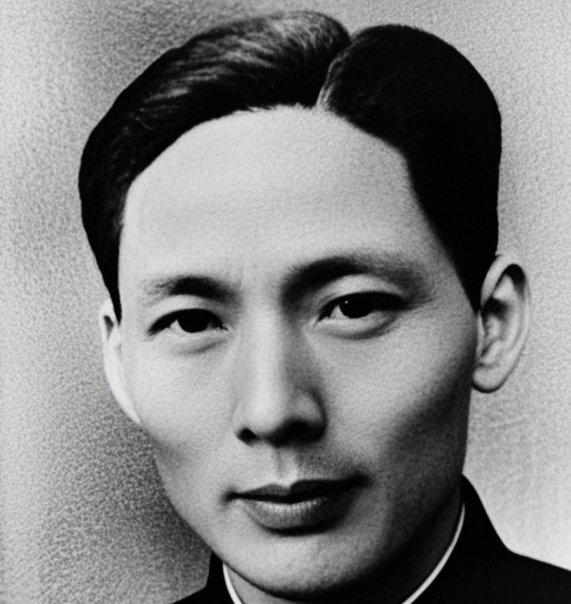
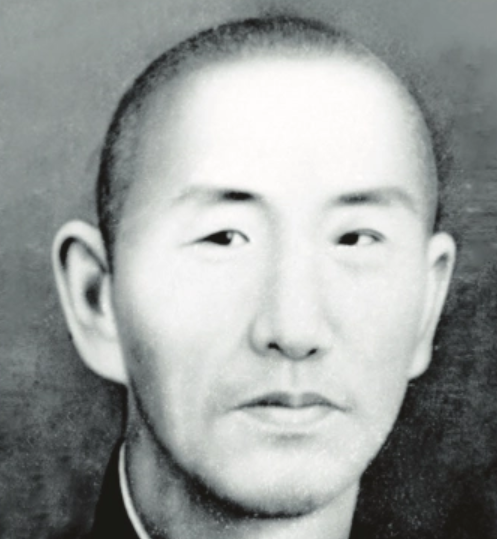
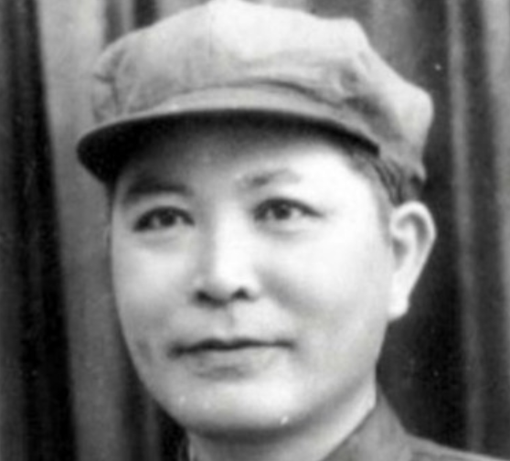
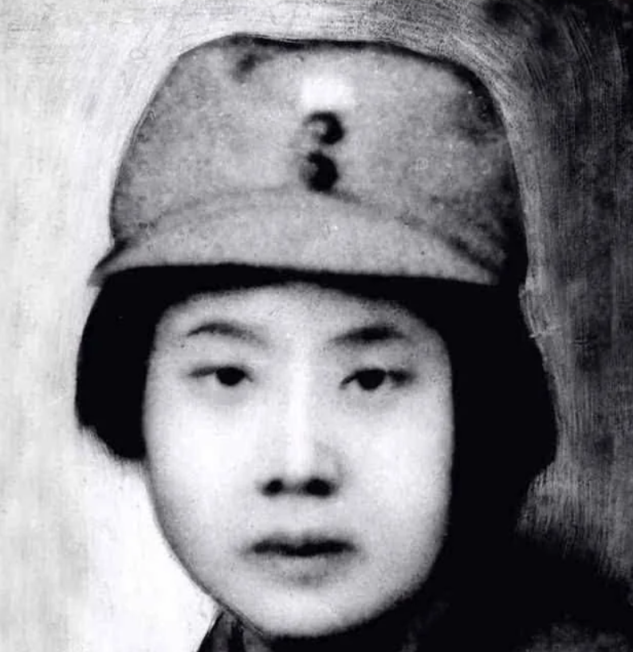
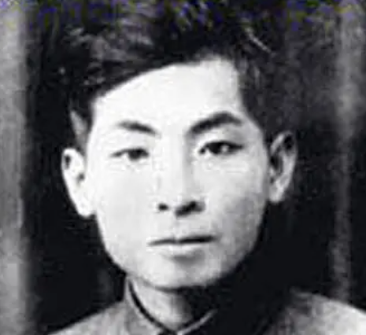

中共浙南委员会成立（1932）
1932年2月至3月，中共浙南委员会在平阳成立，叶廷鹏任书记，并组建浙南红军游击队，在平阳北港和瑞平边开辟了纵横30余里的秘密工作地区，奠定浙南革命基础。
按时间顺序梳理平阳革命的重要节点
1932年2月—3月：中共浙南委员会成立，叶廷鹏任书记。同年3月，浙南红军游击队在平阳县麻步镇渔塘社区凤山头陈体昌家成立，叶廷鹏兼任队长。这支队伍在平阳北港和瑞平边开辟了一块纵横30余里的秘密工作地区。
1934年6月：中共中央和中革军委决定，将寻淮洲、乐少华、粟裕领导的红七军团改称为中国工农红军北上抗日先遣队。
1935年1月：北上抗日先遣队主力在赣东北怀玉山遭强敌围攻，伤亡惨重，方志敏被俘，余部在粟裕、刘英领导下冲出重围。
1935年2月：中共中央电令，以北上抗日先遣队先头部队和突围部队为基础，组建中国工农红军挺进师，共500余人，粟裕任师长，刘英任政委。
1935年3月25日：挺进师500多人在粟裕、刘英率领下进入龙泉西部山区，在溪头村打响了入浙第一仗。
1935年10月5日：挺进师在福建省寿宁县郑家坑与闽东特委负责人叶飞及其率领的闽东红军独立师会师。
1935年10月中旬：挺进师第一次进入平阳境内。粟裕、刘英率部从瑞安珊溪经腾蛟首次进入平阳，次日经山门、晓坑、穹岭离开。
1935年11月7日：挺进师政治委员会和中共闽东特委在泰顺县白柯湾小宫庙召开联席会议，正式成立中共闽浙边临时省委和闽浙边临时省军区。刘英任临时省委书记兼临时省军区政委，粟裕任组织部长兼临时省军区司令，叶飞任宣传部长兼少共临时省委书记。
1935年11月中下旬：刘英、粟裕率挺进师第二次进入平阳。
1936年3月：挺进师第三次进入平阳。
1936年5月：吴毓、黄先河、陈铁君、杨进等人组建了一支数十人的浙南红军游击队，队长陈铁君。
1936年7月中旬：挺进师第四次进入平阳。
1936年9月上旬：挺进师第五次进入平阳。粟裕率挺进师200多人从福鼎、泰顺之间山区重返平阳，与浙南红军游击队在瑞安平阳边界地葛藤湖会师。中共浙南委员会书记叶廷鹏和中共平阳县委书记郑海啸主动提出接受闽浙边临时省委的领导。随后，中共浙南委员会派林心平赶往上海，将刘英的报告送到中央特科上海办事处，挺进师重新与党中央恢复了联系。
1937年8月24日：中共闽浙边临时省委与国民党闽浙赣皖四省边区主任公署进行第二次和平谈判，达成停战协议，闽浙红军改为国民革命军。
1937年8月27日：红军闽浙军区发布通告，要求所属部队集中。
1937年9月14日：刘英率闽浙边临时省委机关和挺进师特务队重返平阳山门大屯。
1937年10月2日：国共两党达成协议，将南方八省14个地区的红军游击队统一改编为“国民革命军新编第四军”（新四军）。
1937年11月：粟裕率部到达平阳山门。
1938年1月：中共闽浙边临时省委机关和闽浙边临时省军区司令部移驻山门乡大屯村。同月，闽浙边抗日救亡干部学校在平阳山门创办，粟裕任校长。粟裕在龙井庵编写了《游击战术讲授提纲》，这是他的第一篇系统军事著作。
1938年1月6日：新四军军部在江西南昌成立。
1938年3月5日：中共中央东南分局副书记兼组织部长曾山抵达平阳山门大屯村，当日召开闽浙边临时省委扩大会议（史称“大屯会议”）。曾山传达了中共中央政治局和东南分局的指示精神，部署了浙南红军游击队改编为新四军和北上抗日的工作。
1938年3月上旬：国民革命军闽浙边抗日游击总队在山门改编为新四军第三支队第七团队，粟裕任团队长。
1938年3月18日：粟裕率新四军第三支队第七团队500余名将士从平阳山门出发，北上奔赴皖南抗日前线。此后这支部队在抗日战场上立下赫赫战功，被誉为“老虎团”。
1938年5月7日：刘英、顾玉良、汪光焕、龙跃、林辉山等在平阳县北港凤卧乡玉青岩村召开会议，根据东南分局指示，撤销中共闽浙边临时省委和浙江省工作委员会，成立中共浙江临时省委，刘英任书记。
1938年9月：经中央批准，中共浙江临时省委转为正式省委。
1939年3月至4月：周恩来在金华秘密约见省委书记刘英，传达党的六届六中全会精神，告知中央即将召开七大，要求浙江选派代表参加。
1939年6月：浙江省委作出决定，省一大于7月下旬在平阳凤卧召开。
1939年7月21日至30日：中共浙江省第一次代表大会在平阳县凤卧乡冠尖和马头岗两地召开。出席大会的正式代表26名，列席代表9名，代表全省19000多名党员。这是新民主主义革命时期浙江省党组织召开的唯一一次全省党代表大会。大会选举产生了新的浙江省委，并选出12名正式代表出席党的七大。会议期间，为确保安全，大会从冠尖转移到马头岗，最后一天又回到冠尖。
1939年10月：浙江七大代表奉命出发，林一心率领代表奔赴延安。最终5名代表于1940年12月16日到达延安，走了1万多里路，历时一年四个月。
1942年2月：因叛徒（秘书周一群）出卖，省委书记刘英在温州被捕。
1942年5月18日：刘英在浙江永康方岩马头山麓英勇就义，年仅37岁。
刘英牺牲后，浙江省委机关活动被迫终止。从1942年到1949年解放，浙江进入长达七年没有统一领导机构的时期。
1949年5月6日：解放后的新一届中共浙江省委在杭州成立，谭启龙任建国后浙江首任省委书记。
1949年5月7日：温州和平解放。
1949年5月12日：平阳县城解放。
1949年5月20日：平阳县人民政府筹备委员会成立，郑海啸任主任委员。
1955年2月26日：南麂列岛解放，标志着浙江省全境解放。南麂岛是国民党从大陆撤往台湾的最后一站。
1932年2月至3月，中共浙南委员会在平阳成立，叶廷鹏任书记，并组建浙南红军游击队，在平阳北港和瑞平边开辟了纵横30余里的秘密工作地区，奠定浙南革命基础。
挺进师入浙后，1935年11月7日与闽东特委在泰顺白柯湾召开联席会议，正式成立中共闽浙边临时省委和闽浙边临时省军区，统一领导浙南革命斗争，刘英任省委书记。
1938年3月5日，中共中央东南分局曾山在平阳山门大屯村召开闽浙边临时省委扩大会议，部署部队改编与北上抗日。3月18日，粟裕率新四军第三支队第七团队500余名将士北上皖南抗日前线，该部队被誉为“老虎团”。
1939年7月21日至30日，中共浙江省第一次代表大会在平阳凤卧冠尖和马头岗召开，正式代表26名、列席代表9名，代表全省19000多名党员，是新民主主义革命时期浙江省召开的唯一一次全省党代表大会。
1942年2月，省委书记刘英因叛徒出卖被捕，同年5月18日在浙江永康方岩英勇就义，年仅37岁。此后浙江省委机关活动被迫终止，直至1949年解放。
1949年5月7日温州和平解放，5月12日平阳县城解放，5月20日平阳县人民政府筹备委员会成立，郑海啸任主任委员。1955年2月26日南麂列岛解放，浙江全境解放。

中国工农红军挺进师师长、闽浙边临时省军区司令。率部五次进入平阳；1938年3月任新四军第三支队第七团队团队长，率500余名将士从山门北上皖南抗日前线。

挺进师政委、中共闽浙边临时省委书记、浙江省委书记。领导召开中共浙江省第一次代表大会；1942年5月18日在浙江永康方岩英勇就义，年仅37岁。

中共浙南委员会书记、浙南红军游击队队长。1932年在平阳创建浙南党组织与红军游击队，开辟北港秘密工作地区；1936年主动提出接受闽浙边临时省委的领导。

中共平阳县委书记。1936年率平阳党组织接受闽浙边临时省委领导；1949年5月任平阳县人民政府筹备委员会主任委员。

1936年受中共浙南委员会派遣赶往上海，将刘英的报告送到中央特科上海办事处，使挺进师重新与党中央恢复联系。

闽东特委负责人。1935年10月率闽东红军独立师在福建寿宁郑家坑与挺进师会师，推动闽浙边临时省委的成立，并任临时省委宣传部长。